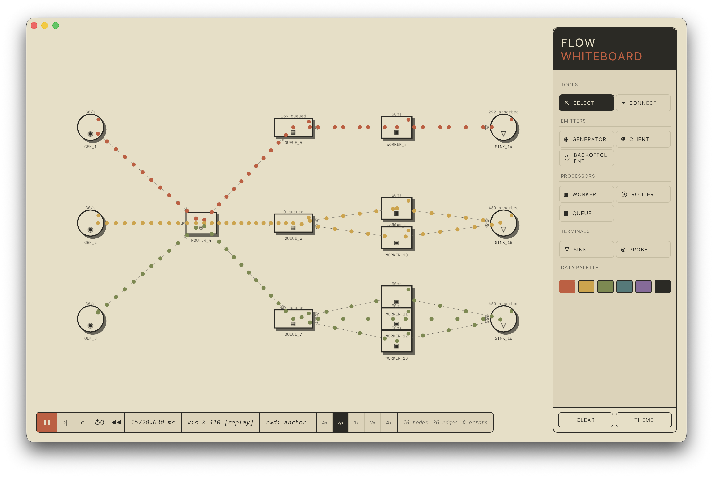
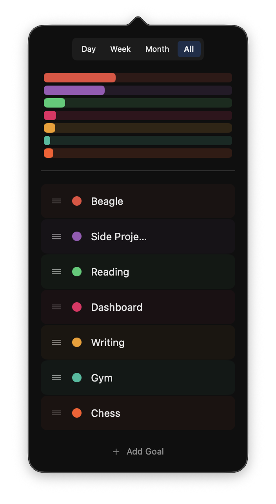
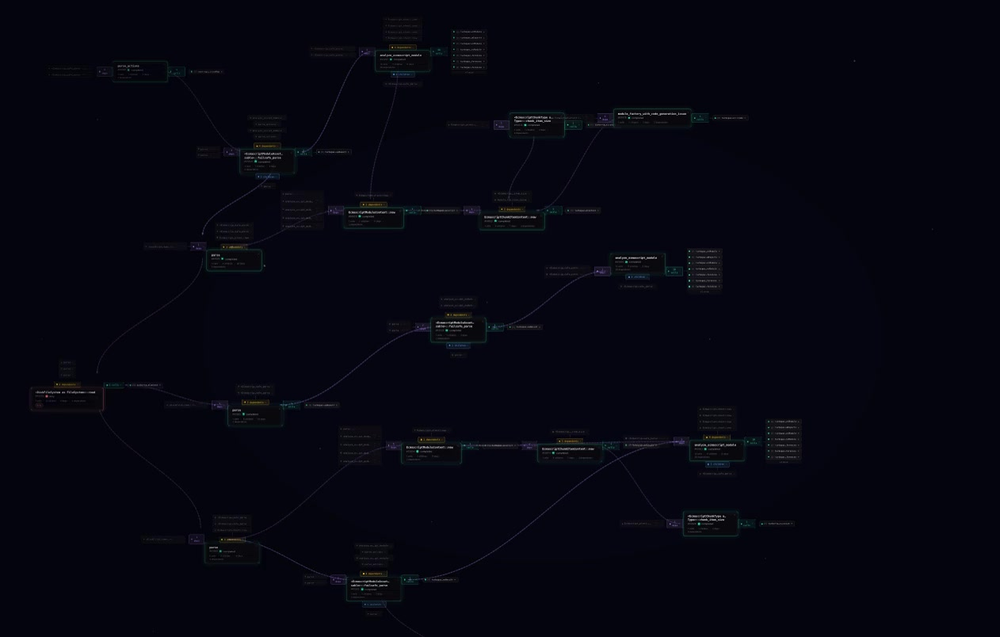
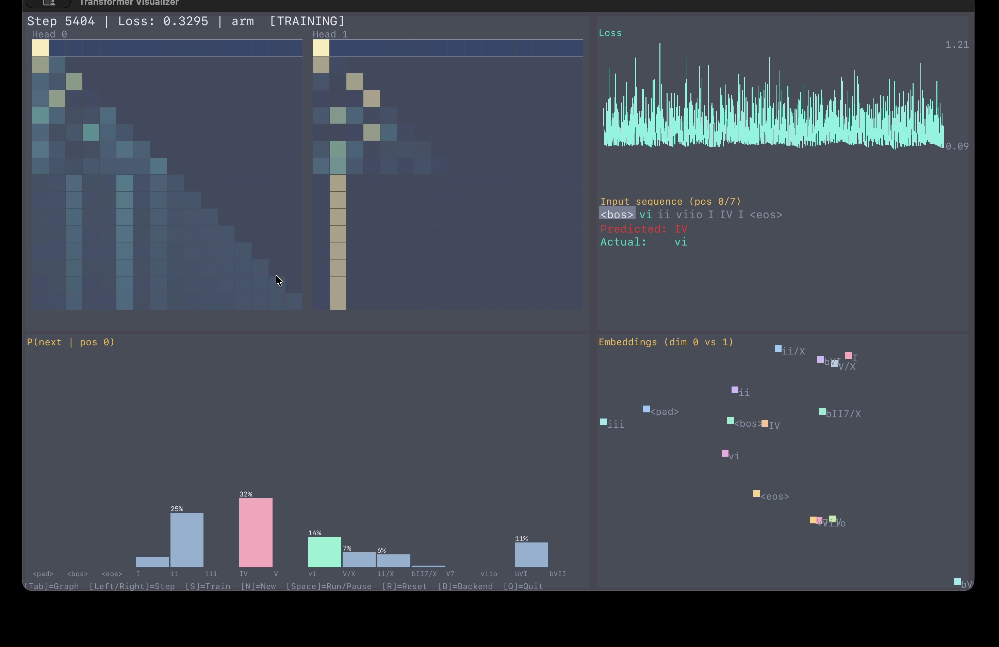

Things I've been
building, lately
I've been having a lot of fun exploring projects lately. Below are just a handful of projects I've been messing with. Some are utilities. Some are learning projects. All of them have been incredibly fun and helped along with AI to various degrees.
beagle
Dynamic, mostly-functional, compiles straight to machine code
No VM, no bytecode, no JIT warm-up. By far my longest-running, most complete project. All compilation and code generation use dependency-free custom backends for x86 and ARM. The goal is to be a language with fantastic live coding support allowing for humans or AI to build full applications without ever restarting a process.
1use beagle.socket as socket23fn main() {4 let listener = socket/listen("0.0.0.0", 8080)5 println("Echo server listening on port 8080")67 socket/on-connection(listener, fn(conn) {8 loop {9 let data = socket/read(conn, 4096) // fully async, no function coloring10 if data == "" || data == null {11 socket/close(conn)12 break(null)13 } else {14 socket/write(conn, data)15 }16 }17 })18}
Built-in algebraic effects make it easy to control and test IO
Redefine functions, structs, and enums while your code is running
Delimited continuations give us the power to have transparent asynchrony
No VM, no bytecode — direct machine code
keep-running
Dtach, but with a friendlier CLI and a replay buffer
Run a long process, detach, let it keep going, reattach later from anywhere. Small utility, but I've found it incredibly useful.
flow-whiteboard
The diagram on the whiteboard, but it actually runs
I've always wanted to be able to draw on a whiteboard and then truly simulate the system. This proof-of-concept does exactly that. Under the hood is a simulation driven by a rules-based language, enabling running simulations faster than real time or rewinding through time. It is quickly approaching something powerful and flexible enough to model real systems.

ease
A macOS menu-bar habit tracker that I actually use
Ease is an incredibly simple but handy progress tracker I've made for myself. Rather than track exact time I work on projects, it lets me fuzzily measure the amount of work I've put in.

turbopack-visualizer
Untapped Way to Learn a Codebase: Build a Visualizer
I have aphantasia. From my very first job, I realized if I wanted to fully understand a codebase, I needed to build something that visualizes how it works and lets me interact with it. This is now how I learn new codebases. I wrote a blog post where I walk through how I do this using turbopack as my case study. Below is the video of the quick Vc visualizer and stepping debug that was the end result of the endeavor.

simd-lang
A language where every value is a SIMD vector
I've always wanted to explore what a language that took SIMD as the primitive would look like. This was a fun exploration. With 53 lines of a DSL (simplified below by cutting out Unicode handling), I got something that does the stage1 parsing of JSON at about .75x the speed of simdjson. The whole language compiles using MLIR, taking full advantage of its vector dialect. In many ways this is a learning project for me to start better understanding SIMD approaches.
1fn json_stage1(input: ptr[u8], positions: ptr[i32]) -> i32[1] {2 stream chunk: u8[64] over input carry (prev_in_string: u64[1] = 0,3 pos: i32[1] = 0) {4 quote_vec = chunk == '"'5 bs_vec = chunk == '\\'6 real_quote_vec = quote_vec & ~lane_shr(bs_vec, 1)78 structural_vec = (chunk == '{') | (chunk == '}') | (chunk == '[')9 | (chunk == ']') | (chunk == ':') | (chunk == ',')1011 all_ones: u64[1] = ~012 quote_bits = to_bitmask(real_quote_vec)13 in_string_raw = clmul(quote_bits, all_ones)14 in_string_with_carry = in_string_raw ^ prev_in_string1516 real_structural_bits = to_bitmask(structural_vec) & ~in_string_with_carry17 real_structural_vec = from_bitmask(real_structural_bits, 64)1819 indices = iota(64) + chunk_offset20 compressstore(positions, pos, indices, real_structural_vec)2122 carry prev_in_string = (in_string_with_carry >> 63) * all_ones23 carry pos = pos + popcount(real_structural_vec)24 }25 return pos26}
tensor-lang
From-scratch tensor compiler — one DSL, four backends, real models
I've become increasingly interested in how LLM compilers do their optimization. But also in deeply understanding the transformer architecture. This is an ongoing project where I have a simple DSL that can express simple models like GPT-2. I then take this and compile it into ARM machine code, WASM (scalar), WASM (SIMD), and WGPU. As part of this I trained a tiny model on some jazz chord progressions and made a UI where you can watch it train live and inspect every tensor. All of this is powered by my compilers and DSL.

1// Attention block2let ln1_out = layernorm(x, ln1_g, ln1_b)3let qkv = linear(ln1_out, attn_qkv_w, attn_qkv_b)4let qkv_r = reshape(qkv, [B, T, 3, n_head, head_size])5let q = reshape(shrink(qkv_r, [[0, B], [0, T], [0, 1], [0, n_head], [0, head_size]]), [B, T, n_head, head_size])6let k = reshape(shrink(qkv_r, [[0, B], [0, T], [1, 2], [0, n_head], [0, head_size]]), [B, T, n_head, head_size])7let v = reshape(shrink(qkv_r, [[0, B], [0, T], [2, 3], [0, n_head], [0, head_size]]), [B, T, n_head, head_size])8let q_h = permute(q, [0, 2, 1, 3])9let k_h = permute(k, [0, 2, 1, 3])10let v_h = permute(v, [0, 2, 1, 3])11let kt = permute(k_h, [0, 1, 3, 2])12let scores = mul(matmul(q_h, kt), inv_head_size)13let masked = add(scores, mask_full)14let attn = softmax_attn(masked)15let attn_out = matmul(attn, v_h)16let merged = reshape(permute(attn_out, [0, 2, 1, 3]), [B, T, n_embd])17let attn_res = linear(merged, attn_proj_w, attn_proj_b)18let x = add(x, attn_res)
datalog-db
A Datomic-shape database with a real surface syntax
I've grown to love datalog. It is a fascinating way to look at databases and truly gives some amazing expressiveness. This is only a POC right now, but the goal is to build a proper Datalog database on top of a key-value store. But I don't want users to need to think about the exact details of the underlying store and instead work in a much higher-level fashion. To that end, I've added something I always want in a DB: algebraic data types.
1define User {2 name: string required,3 age: i64,4 email: string unique indexed,5}67define enum Status {8 Active,9 Suspended { reason: string },10}1112assert User { name: "Alice", age: 30, email: "alice@example.com" }13assert User { name: "Bob", age: 25, email: "bob@example.com" }14assert User { name: "Charlie", age: 35, email: "charlie@example.com" }1516find ?name, ?age17 where ?u: User { name: ?name, age: > 27 }18 as_of_time "2026-04-30T00:00:00Z"